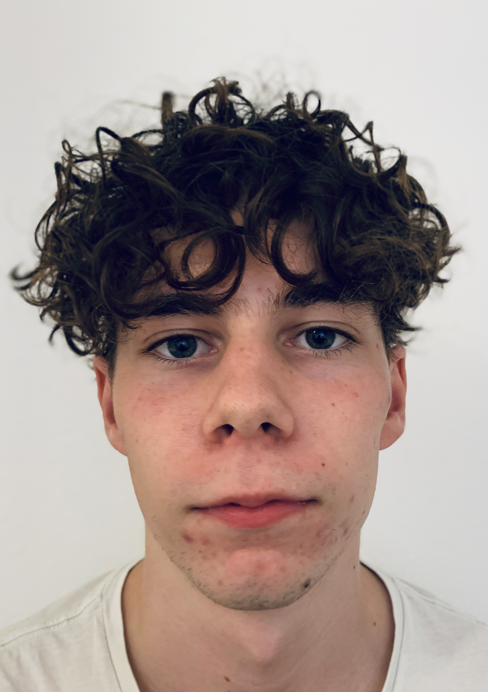

 Je m'appelle Matthieu Prevost, j'ai actuellement 18 ans et je suis étudiant à l'Université de Haute Alsace à Colmar. Je suis actuellement en première année en Réseaux et télécommunications. Alors pourquoi j'ai choisi cette école ou bien pourquoi l'UHA ? Et bien, en fait j'ai toujours été curieux de tous quand j'étais petit. Depuis petit, j'étais sur un pc à jouer à toutes sortes de jeux. Je m'étais toujours demandé : "Comment ça marche ?". Comment un ordinateur peut fonctionner ? J'ai donc commencé à avoir une curiosité sur tout ce qui se passe à l'intérieur de ce dernier. Bien heureusement, j'ai eu un père qui s'y connait dans cette matière et qui a répondu à la plupart de mes questions. Il m'a en quelque sorte ouvert les yeux dans quel domaine je voudrai travailler plus tard. C'est pourquoi j'ai intégré la filière Réseaux et Télécommunications qui permettra d'assouvir ma curiosité pour cette matière et j'y compte y tenir.